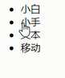

CSS高级技巧
鼠标样式cursor
检索在对象上移动的鼠标指针采用哪种系统预定义的光标形状。
cursor : default 箭头光标 | pointer 小手 | move 移动 | text 文本 | help 问号
cursor: pointer

cursor: move

cursor: text

轮廓(Outline)
outline属性最常见的是在<input>和<a>中使用outline: none;取消轮廓线，防止破坏外观！
盒子的outline属性不是盒子模型的一部分，它的表现类似于边框，但是并不改变盒子的大小。（更准确地说，outline绘制于在盒子边框之外，外边距区域之内）
适用于IE8以上。
出于可访问性原因，它在某些情况下用于突出显示网页的激活部分，例如用户点击它们时的链接。如果您确实要使用outline属性，请确保不要使它们看起来像链接高亮，因为这可能会使用户感到困惑。

两个相同的声明：
:link:hover { outline: 1px solid #000; }
:link:hover { outline: solid black 1px; }
轮廓与边框在以下方面存在不同：
● 轮廓不占据空间，绘制于元素内容之外。
● 轮廓可以是非矩形的。在Gecko/Firefox中，轮廓是矩形的，但是Opera则会围绕元素结构绘制非矩形的形状。
语法格式（与border一样）
[ <'outline-color'> || <'outline-style'> || <'outline-width'> ]
HTML：
<a href="#">This link has a special focus style.</a>
CSS：
a {
border: 1px solid;
border-radius: 3px;
display: inline-block;
margin: 10px;
padding: 5px;
}
a:focus {
outline: 4px dotted #e73;
outline-offset: 4px;
background: #ffa;
}
效果图：

防止拖拽文本域
resize: none

隐藏溢出的文字
word-break:自动换行，主要处理英文单词。
word-break: break-all 单词可拆开换行显示

word-break: keep-all 单词只能在半角空格或连字符处换行

white-space
white-space: nowrap 强制同一行内显示所有文本，直到文本结束或者遇到<br>标签。

text-overflow


CSS精灵（sprite）技术 （精灵图）
CSS精灵是一种处理网页背景图像的方式。它将一个页面涉及到的所有零星背景图像都集中到一张大图中去，然后将大图应用于网页，这样，当用户访问该页面时，只需向服务发送一次请求，网页中的背景图像即可全部展示出来。

Firework切片工具

水平和垂直（笛卡尔）坐标系


精灵图的background-position坐标一般都是负的（往左移、往上移）

精灵图上放的都是小的装饰性质的背景图片。 插入图片不能往上放。
精灵图的宽度取决于最宽的那个背景。
我们可以横向摆放也可以纵向摆放，但是每个图片之间，间隔至少隔开偶数像素合适。
在我们精灵图的最底端，留一片空隙，方便我们以后添加其他精灵图。
结束语： 小公司，背景图片很少的情况，没有必要使用精灵技术，维护成本太高。 如果是背景图片比较多，可以建议使用精灵技术
PS制作精灵图（把小图拼合成一张大图）
新建透明图层（自定宽高）

多选图层，右键复制图层到新建图层


或者直接下拉分屏多选图层拖动到新建图层

Ctrl+E合并图层

存储为，一定要是PNG或GIF格式的!即可完成

CSS精灵图应用——王者荣耀导航栏改变图片（一开始以为是渐变，渐变代码很难做）


a {
float: left;
width: 196px;
height: 53px;
background: url(images/sp.png) no-repeat;
background-position: -389px -303px;
text-align: center;
line-height: 53px;
color: #fff;
font-weight: 700;
text-decoration: none;
}
a:hover {
background-position: -170px -300px;
}
字体图标
可以对字体图标使用字体属性改变字体大小、颜色等
本质其实是文字，可以很随意的改变颜色、产生阴影、透明效果等等,图标是可以缩放不失真。
体积更小，但携带的信息并没有削减。
几乎支持所有的浏览器。

icomoon字库
IcoMoon成立于2011年，推出的第一个自定义图标字体生成器，它允许用户选择他们所需要的图标，使它们成一字型。 内容种类繁多，非常全面，唯一的遗憾是国外服务器，打开网速较慢。
推荐网站： http://www.iconfont.cn/
svg格式上传转换为字体格式


下载字体图标

选中图标

更多图标

下载

更多设置


解压压缩包

第一步：在样式里面声明字体： 告诉别人我们自己定义的字体，注意路径
@font-face {
font-family: 'icomoon';
src: url('fonts/icomoon.eot?7kkyc2');
src: url('fonts/icomoon.eot?7kkyc2#iefix') format('embedded-opentype'),
url('fonts/icomoon.ttf?7kkyc2') format('truetype'),
url('fonts/icomoon.woff?7kkyc2') format('woff'),
url('fonts/icomoon.svg?7kkyc2#icomoon') format('svg');
font-weight: normal;
font-style: normal;
}

选中复制到上面的<span>


阿里icon font字库
这个是阿里妈妈M2UX的一个icon font字体图标字库，包含了淘宝图标库和阿里妈妈图标库。可以使用AI制作图标上传生成。 一个字，免费，免费！！
Font-Awesome
这是我最喜欢的字库之一了，更新比较快。目前已经有369个图标了。
Glyphicon Halflings
这个字体图标可以在Bootstrap下免费使用。自带了200多个图标。
CSS滑动门技术
使各种特殊形状的背景能够自由拉伸滑动，以适应元素内部的文本内容的多少，可用性更强。 最常见于各种导航栏的滑动门。


原理：原背景图--> 切开左边 --> 剩下的右边随着文字的增多从左往右滑动(这也是文字增长的方向)
核心技术就是利用CSS精灵（主要是背景位置的左右对齐）和盒子padding撑开宽度, 以便能适应不同字数的导航栏。


做法：
1、a 设置为左侧背景，padding-left撑开合适宽度。
2、span设置为右侧背景， padding-right撑开合适宽度，剩下由文字继续撑开宽度。（文字增加的方向是从左到右）


body,ul,li{
margin: 0;
padding: 0;
}
ul{
list-style: none;
}
body{
background: url(images/wx.jpg) repeat-x;
}
.nav{
/*background-color: pink;*/
height: 75px;
padding-top: 21px;
}
.nav li{
float: left;
margin: 0 2px;
}
.nav li a{
display: block;
background: url(images/to.png) no-repeat;
padding-left: 15px;
text-align: center;
line-height: 33px;
color: #fff;
text-decoration: none;
outline: none;
}
.nav li a span{
display: block;
background: url(images/to.png) no-repeat right;
padding-right: 15px;
}
.nav li a:hover{
background: url(images/ao.png);
}
.nav li a:hover span{
background: url(images/ao.png) right;
}
<div class="nav">
<ul>
<li>
<a href="#"><span>首页</span></a>
</li>
<li>
<a href="#"><span>帮助与反馈</span></a>
</li>
<li>
<a href="#"><span>公众平台</span></a>
</li>
<li>
<a href="#"><span>开放平台</span></a>
</li>
</ul>
</div>
before和after伪元素(详解)
伪元素:before和:after本质是插入行内元素盒子，添加的内容默认是inline元素；这个两个伪元素的content属性，表示伪元素的内容,设置:before和:after时必须设置其content属性，否则伪元素就不起作用。
伪元素插入透明相框效果案例
div:hover::before{
content: "";
display: block;
width: 100%;
height: 100%;
border: 10px solid rgba(255, 255, 255, .3);
box-sizing: border-box;
position: absolute;
top: 0;
left: 0;
}

过渡(CSS3)
transition属性


transition: 过渡属性 过渡时间（持续时间） 过渡运动曲线（计时函数） 过渡何时开始（延迟）;
all：对所有的有效属性应用过渡。 写一个all 就可以！并不是所有属性都可以有过渡效果！
transition-duration（持续时间）是必需的！
运动曲线（计时函数） ：默认ease是减速

transition: width 0.5s ease-in 0s, height 0.5s ease-in 0.6s; /*先变宽再变高！*/
transition不要写在伪类hover里：因为当鼠标离开会立马打回原形，没有持续的过渡效果返回原形。transition写在div里则不会！
谁做动画transform就给谁加过渡transition！
div{
width: 200px;
height: 100px;
background-color: pink;
transition: width 0.5s ease 0s, height 0.3s ease-in 0.6s;
}
div:hover{
width: 500px;
height: 500px;
}
<div></div>
2D变形(CSS3)
变换是CSS3中具有颠覆性的特征之一，可以实现元素的位移、旋转、变形、缩放，甚至支持矩阵方式，配合过渡和即将学习的动画知识，可以取代大量之前只能靠Flash才可以实现的效果。

transform属性
变形转换 （变形金刚）
transform属性有四下函数作为值：移动 translate(x, y)，缩放 scale(x, y)，旋转 rotate(deg)，倾斜 skew(deg, deg)
● 移动 translate(x, y)
translate(x,y)水平方向和垂直方向同时移动（也就是X轴和Y轴同时移动）
translateX(x)仅水平方向移动（X轴移动）
translateY(Y)仅垂直方向移动（Y轴移动）

translate()函数的百分比值是以自己为准，与父元素无关！可以使用translate()函数让定位的盒子水平垂直居中，不需要知道宽高！
.box {
width: 499.9999px;
height: 400px;
background: pink;
position: absolute;
left:50%;
top:50%;
transform:translate(-50%,-50%); /* 走的自己的一半 */
}
● 缩放 scale(x, y)
scale(X,Y)使元素水平方向和垂直方向同时缩放（也就是X轴和Y轴同时缩放）
scaleX(x)元素仅水平方向缩放（X轴缩放）
scaleY(y)元素仅垂直方向缩放（Y轴缩放）
scale()的取值默认的值为1，当值设置为0.01到0.99之间的任何值，作用使一个元素缩小；而任何大于或等于1.01的值，作用是让元素放大

悬浮放大图片案例
section{
width: 632px;
height: 340px;
overflow: hidden;
position: absolute;
left: 50%;
top: 50%;
transform: translate(-50%,-50%);
}
section::after{
content: "";
display: block;/*伪元素是行内元素*/
width: 100%;
height: 100%;
border: 10px solid rgba(0, 0, 0, .3);
box-sizing: border-box;/*左上为起点，width又为100%，边框会漏在图片外面*/
position: absolute;
top: 0;
left: 0;
}
section:hover img{
transition: all, 0.5s;
transform: scale(1.2);
}
<section>
<img src="images/mi-2.jpg">
</section>

● 旋转 rotate(deg)
对元素进行旋转，正值为顺时针，负值为逆时针（中心线基准点）
transform:rotate(45deg)

注意：
1. 当元素旋转以后，坐标轴也跟着发生的转变
2. 调整顺序可以解决，把旋转放到最后
3. 注意单位是 deg 度数
旋转的楚乔传案例
div{
width: 450px;
height: 300px;
border: 1px solid red;
margin: 200px auto;
position: relative;
}
img{
width: 100%;
height: 100%;
position: absolute;
top: 0;
left: 0;
transition: all 10s;
transform-origin: bottom left;
}
div:hover img:nth-child(1){
transform: rotate(60deg);
}/*div:hover改为img:hover会造成两种选择器选择对象不统一*/
div:hover img:nth-child(2){
transform: rotate(120deg);
}
div:hover img:nth-child(3){
transform: rotate(180deg);
}
div:hover img:nth-child(4){
transform: rotate(240deg);
}
div:hover img:nth-child(5){
transform: rotate(300deg);
}
div:hover img:nth-child(6){
transform: rotate(360deg);
}
<div>
<img src="images/6.jpg">
<img src="images/5.jpg">
<img src="images/4.jpg">
<img src="images/3.jpg">
<img src="images/2.jpg">
<img src="images/1.jpg">
</div>

练习中遇到的问题：
/*注意——div:hover如果改为img:hover会造成两种选择器选择对象不统一*/
div:hover img:nth-child(1){
transform: rotate(60deg);
}
div:hover img:nth-child(2){
transform: rotate(120deg);
}
● 倾斜 skew(deg, deg)
可以使元素按一定的角度进行倾斜，可为负值，第二个参数不写默认为0。倾斜——捏脸

transform:skew(30deg,0deg);
通过skew方法把元素水平方向上倾斜30度,即左偏逆时针30度！

transform-origin属性
可以调整元素变换的原点。（钉个点）这个属性跟transiton一样不能在播放动画效果同时应用，不然出错！
如果是4个角，可以用 left top这些，如果想要精确的位置， 可以用 px 像素。
div{transform-origin: left top;transform: rotate(45deg); } /* 改变元素原点到左上角，然后进行顺时旋转45度 */
div{transform-origin: 10px 10px;transform: rotate(45deg); } /* 改变元素原点到x 为10 y 为10，然后进行顺时旋转45度 */

3D变形(CSS3) transform
3D变形有三个轴，比2D变形多了一个轴
左手法则：CSS3中的3D坐标系相当于伸出左手，让拇指和食指成“L”形，大拇指向后，食指向右，中指向下。类似3D电影看到不同方向射的箭。

3D旋转相当于一条线穿过一张纸旋转（正值顺时针，负值逆时针）。
rotateX()
横线穿过图片中间，上下翻（正值下翻，负值上翻）
rotateY()
竖线穿过图片中间，左右翻（正值右翻，负值左翻）
rotateZ()
一条穿过图片中心，顺时针逆时针翻（正值顺时针翻，负值逆时针翻）
translateX(x),应用水平居中时记得加X!
仅水平方向移动（X轴移动）
translateY(y)，应用垂直居中时记得加Y!
仅垂直方向移动（Y轴移动）
translateZ(z)
transformZ的直观表现形式就是大小变化，实质是XY平面相对于视点的远近变化
translate3d(x,y,z)
x和y可以是长度值，也可以是百分比，百分比是相对于其本身元素水平方向的宽度和垂直方向的高度；z只能设置长度值
translate3d()配合transition可以实现卡片上升效果案例!!!
translate3d()实现文字上升效果案例（需要配合JS检测滚动）
h2 {
transform: translate3d(0, 50px, 0);
transition: all 0.8s;
}
h2:hover {
transform: translate3d(0, 0, 0);
}
<h2>每一毫米的突破</h2>

透视(perspective)属性
perspective属性一般设置给父元素，作用于所有3D变换的子元素
● 透视原理： 近大远小

● 浏览器透视：把近大远小的所有图像，透视在屏幕上。视点，用于模拟透视效果时人眼的位置
● perspective：视距，表示视点距离屏幕的长短。视距越小，立体（近大远小）效果越明显！

注：并非任何情况下需要透视效果，根据开发需要进行设置。
下图423px为透视（perspective）的距离，108px和279px都是Z轴距离！

比如设置了perspective为200px;那么translateZ()的值越接近200，就是离的越近，看上去也就越大，超过200就看不到了，因为相当于跑到后脑勺去了
开门放图案例，左右门绝对定位、width: 50%;height: 100%；需要使用伪元素插入门锁，还有perspective属性，translateY(y)应用垂直居中时记得加Y!rotateY()记得加Y!
section{
width: 450px;
height: 300px;
border: 1px solid #000;
margin: 100px auto;
background: url(images/3.jpg) no-repeat;
position: relative;
perspective: 1000px;
}
.door-l::before,.door-r::before{
position: absolute;
content: '';
width: 15px;
height: 15px;
top: 50%;
transform: translateY(-50%);
border: 1px solid #000;
border-radius: 50%;
}
.door-l::before{
right: 5px;
}
.door-r::before{
left: 5px;
}
.door-l,.door-r{
width: 50%;
height: 100%;
background: url(images/bg.png);
position: absolute;
top: 0;
transition: all 1s;
}
.door-l{
left: 0;
border-right: 1px solid #000;
transform-origin: left;
}
.door-r{
right: 0;
border-left: 1px solid #000;
transform-origin: right;
}
section:hover .door-l{
transform: rotateY(-135deg);
}
section:hover .door-r{
transform: rotateY(135deg);
}
<section>
<div class="door-l"></div>
<div class="door-r"></div>
</section>

backface-visibility 属性
定义当元素不面向屏幕时是否可见,即元素背面是否可见。
在旋转元素不希望看到其背面时，该属性很有用。
backface-visibility: visible
默认值，背面是可见的。
backface-visibility: hidden
背面是不可见的。
翻转正反面纪念币案例（应用backface-visibility 属性）
div:hover img{
transform: rotateY(180deg);
}/*要让所有的图片都旋转并有过渡效果才有来回反转的效果哦，rotateY()记得加Y不然顺时针旋转*/
div{
width: 225px;
height: 225px;
margin: 100px auto;
position: relative;
}
div img{
position: absolute;
top: 0;
left: 0;
transition: all 1s;
}
div img:first-child{
z-index: 1;
backface-visibility: hidden;
}
div:hover img{
transform: rotateY(180deg);
}/*要让所有的图片都旋转并有过渡效果才有来回反转的效果哦*/
<div>
<img src="images/qian.svg">
<img src="images/hou.svg">
</div>


动画(CSS3) animation

定义动画
@keyframes 动画名称 {
from{ 开始位置 } 0%
to{ 结束 } 100%
}
引用动画
animation:动画名称 动画时间 运动曲线 何时开始 播放次数 是否反方向;
奔跑的跑车案例
img{
width: 100px;
}
img{ animation: run 5s; }
@keyframes run{
0%{
transform: translate3d(0, 0, 0);
}
50%{
transform: translate3d(1000px, 0, 0);
}
51%{
transform: translate3d(1000px, 0, 0) rotateY(180deg);
}
98%{
transform: translate3d(0, 0, 0) rotateY(180deg);
}
}
<div>
<img src="images/car.jpg">
</div>

区别：transform多个属性用空格隔开，transtion多个属性用逗号隔开！
无缝滚动图片案例

*{
margin: 0;
padding: 0;
}
ul{
list-style: none;
}
nav{
width: 882px;
height: 86px;
border: 1px solid #000;
margin: 100px auto;
overflow: hidden;
}
ul{
width: 200%;
}
ul li{
float: left;
animation: scroll 5s linear infinite;
}
@keyframes scroll{
from{
transform: translateX(0, 0, 0);
}
to{
transform: translateX(-882px);
}
}
<nav>
<ul>
<li><img src="images/nav1.jpg"></li>
<li><img src="images/nav2.jpg"></li>
<li><img src="images/nav3.jpg"></li>
<li><img src="images/nav4.jpg"></li>
<li><img src="images/nav5.jpg"></li>
<li><img src="images/nav6.jpg"></li>
<li><img src="images/nav7.jpg"></li>
<li><img src="images/nav1.jpg"></li>
<li><img src="images/nav2.jpg"></li>
<li><img src="images/nav3.jpg"></li>
<li><img src="images/nav4.jpg"></li>
<li><img src="images/nav5.jpg"></li>
<li><img src="images/nav6.jpg"></li>
<li><img src="images/nav7.jpg"></li>
</ul>
</nav>
准备两组图片，nav设为容纳一组图片的宽高

注意：ul设为nav的两倍宽，对ul或者li应用动画效果都可以，最后对<nav>应用溢出隐藏overflow: hidden即可！
 或
或 
弹性布局的好处：
将布局以份数划分（平分剩余的宽高），不但可以响应式还可以加margin不影响布局！
min-width 最小值 min-width: 280px 最小宽度 不能小于280，小于280就不缩放了
max-width 最大值 max-width: 1280px 最大宽度 不能大于 1280，大于1280就不缩放了